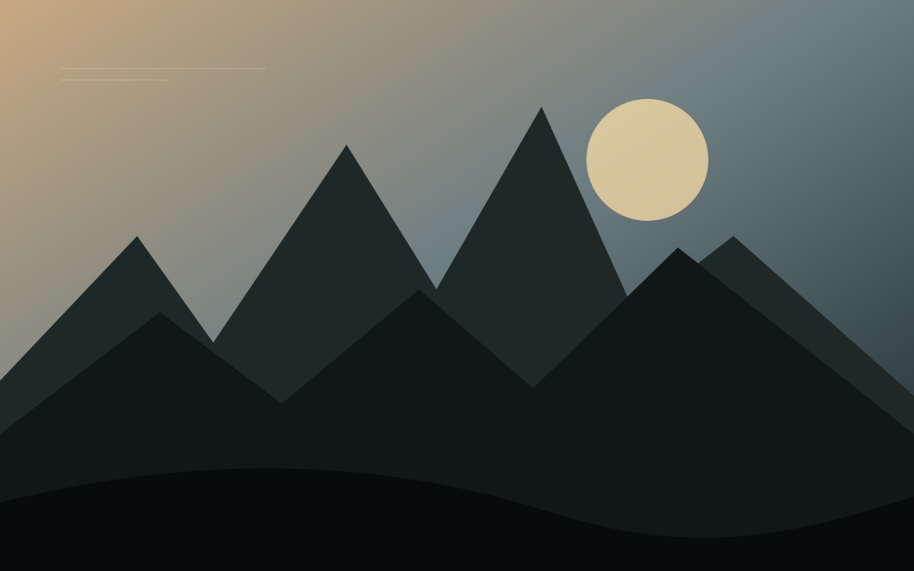
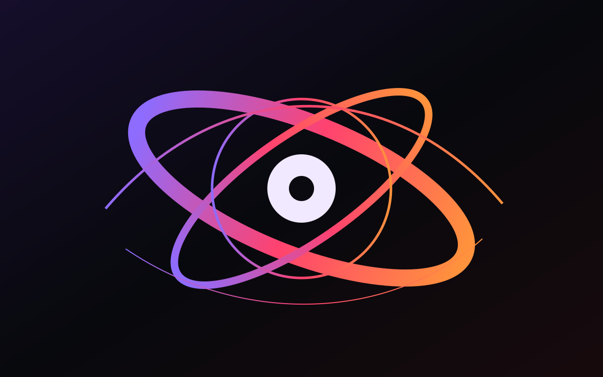

Thalassophobia
Multiplayer underwater survival horror built around saturation diving, tethered exploration and hostile deep-sea environments.
Original IP
Unity / 3D
Unity / 3D
A growing collection of interactive worlds, visual storytelling, animation and production-ready digital assets. Replace the demonstration artwork with your own images or video thumbnails inside the assets folder.



